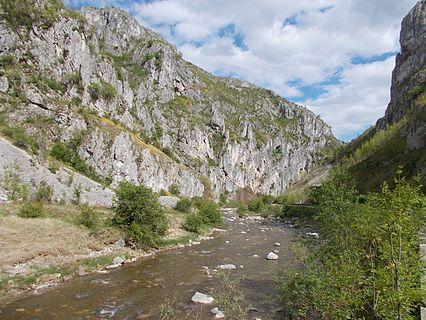

Cheile Sohodolului

Cheile Sohodolului se află la limita nordică a județului Gorj cu județul Hunedoara, în Munții Vâlcan (o grupare ce aparține lanțului montan Retezat-Godeanu din Carpații Meridionali), în partea nordică a satului Runcu și sunt străbătute de râul Jaleș (Sohodol).
Rezervația naturală întinsă pe o suprafață de 350 hectare a fost declarată arie protejată prin Legea Nr.5 din 6 martie 2000 și reprezintă o zonă de chei săpate în calcare cretacice de apele râului Jaleș, cu forme diversificate de relief (doline, canioane, lapiezuri, avene, peșteri, abrupruri stâncoase), cu floră și faună specifică Meridionalilor.
Aria naturală protejată atrage anual mii de turiști din țară și din străinătate.Nările, Fusteica, Inelul, Peștera Popii, Peștera Gârla Vacii sunt niște repere impresionante ale acestei zone, dintre care cea mai vizitată este Peștera Popii datorită picturilor cu siluete antropomorfe de culoare neagră.Pe cheile Sohodolului se practică alpinismul pe cele 120 de trasee special amenajate.
Zona Vaii Sohodolului este o importantă rezervatie floristica care adăpostește are o mare bogatie de specii de plante, unele dintre ele fiind rare in flora tarii noastre. S-a constatat ca pe o suprafata relativ mica de circa 150.000-200.000 mp se afla 345 specii de plante vasculare care apartin unui numar de 71 familii. Numarul mare de plante vasculare pe un teritoriu atat de restrans se explica atat prin conditiile geomorfologice cat si prin conditiile pedoclimatice.
Pentru cei care vor sa practice alpinismul, Cheile Sohodolului sunt locul ideal datorita existentei a numeroase trasee speciale pentru acestia. Astfel, anual in perioada 21-23 Septembrie se desfasoara Festivalul de Escalada „Sohodol Climb”.